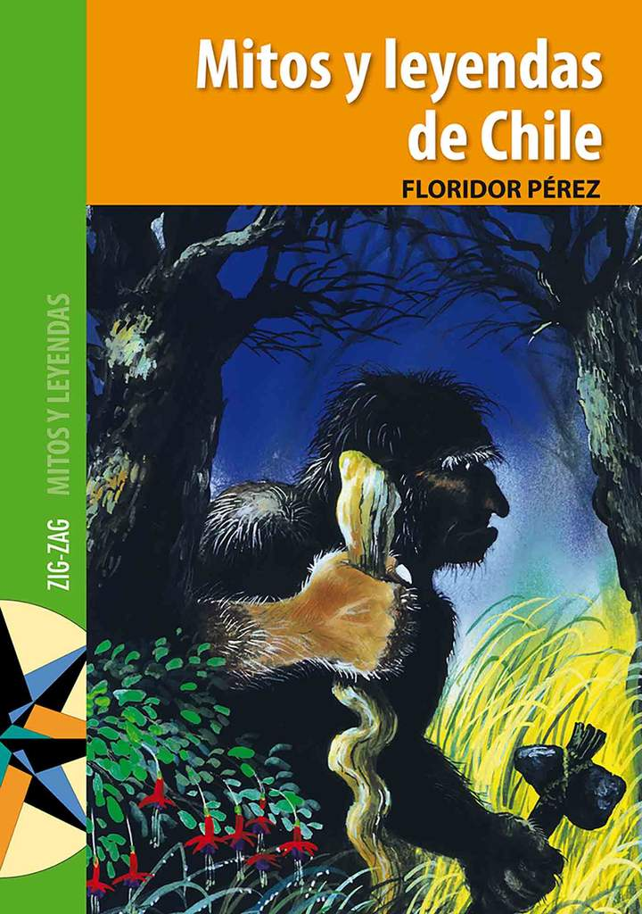

AAAAAAA

Este libro recoge muchos de los más entrañables mitos y leyendas chilenos, como “El Chonchón”, “El Trauco” y “El Caleuche”, entre otros mitos; y “La Tirana del Tamarugal”, “Juan Soldado” y “El roto que engañó al diablo”, entre otras leyendas. Los mitos abordan aspectos importantes de la existencia humana y son parte del patrimonio cultural de los pueblos. Las leyendas, a su vez, son ficciones, pero se basan en hechos posibles ocurridos en lugares geográficos conocidos y con participación de personas reales.